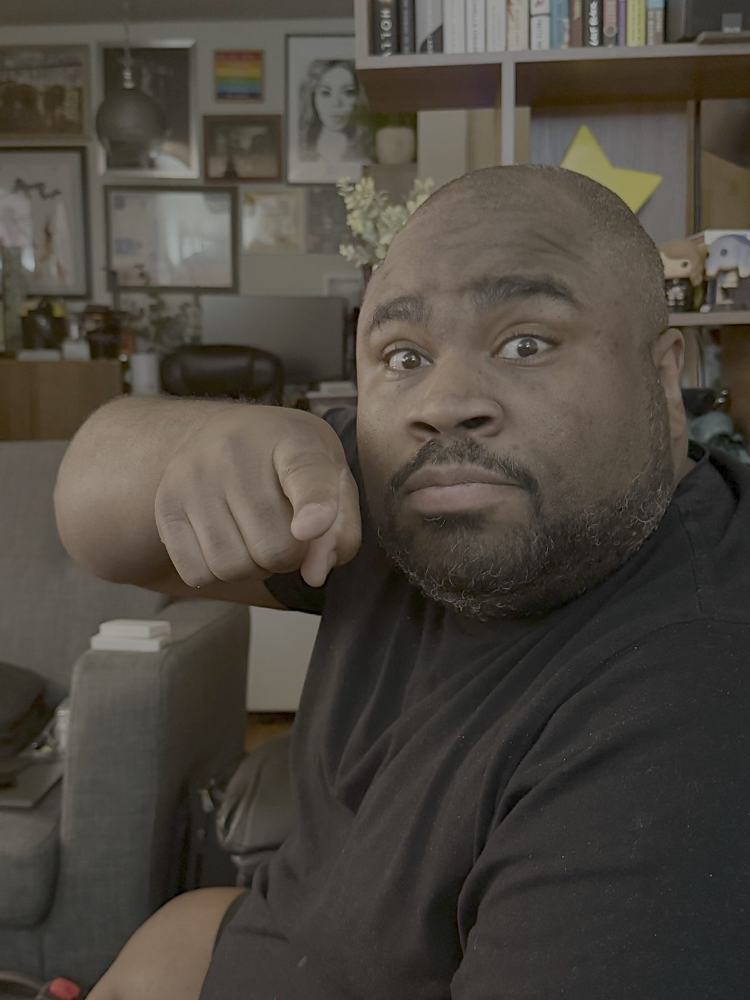

About Melvin

Early life
Melvin was born in New Orleans in 1979 and was raised there by two loving parents. He has a sister who now lives in Houston, Texas. When young, he was also raised by his grandmother because his parent were both working. He married his high school sweetheart while in college and had to start working. That’s the reason he stopped attending his classes. He has two children, Kelsey, who is autistic, and Mia. They are now adults. Then Hurricane Katrina happened, and his family was forced to move to Texas, where his wife died a year later from cancer. He found himself alone with his two kids.
Work & values
Melvin had many jobs. Today, he’s a drug-testing technician, but his real passion lies in the visual arts, such as photography and videography. His goal is to live off his passion and finally make his first film. He learned how to give life to a picture on his own using what he had access to. He finally masters this art and plans to use his talent to go further and maybe be recognized as he should.
Today
Melvin still lives in Texas and prepares his film. He came out to his parents a few years ago, and he’s now married to a French man. They have been married for the last ten years. He has been happy to see his son graduate from high school. He is the most gentle and caring man, and he always likes to spread happiness to the people he meets. I know that because he’s my husband.